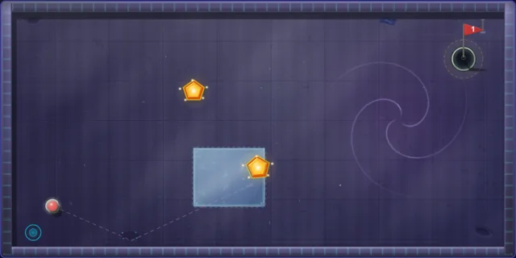
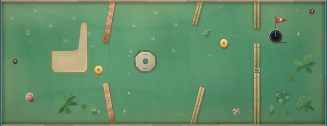

Every time I tweak something (a slightly bouncier bumper, a stronger magnet) any hole in the game can quietly change. Par becomes impossible. The only route gets blocked. A hole that used to be friendly turns brutal for someone playing for the first time. I can't replay 80 holes after every change, so something else does.
Meet the critic
The critic is a physics simulator. It's built on the same collision and terrain code the game runs, so it isn't a model guessing what might happen. It's the game playing itself, very fast, over and over, and writing down what went wrong.
Every hole is scored on up to 23 checks. A few of them, in plain words:
- Par feasibility: a straightforward bot has to be able to make par.
- Casual playability: a simulated first-timer, with deliberately shaky aim and uneven power, plays the hole again and again. How often do they make par, and how often do they give up?
- Route diversity: the critic sweeps 72 aim angles at 6 power levels to see whether there's more than one way in.
- Cup corridor: can the ball reach the cup from all eight directions, or has the hole walled it off?
- Power window: does par demand a pixel-perfect amount of power?
A real report
Here's the actual report for Asteroid Field, a par-2 hole in the Space world, trimmed to the interesting lines:

=== CRITIQUE: Asteroid Field (H37) par 2 ===
✓ Par feasibility: PASS skilled=2strokes (par 2)
✓ Casual playability: PASS par-rate=43%±17 fail-rate=40%±17 (n=30, 95% CI)
✓ Cup-corridor-width: PASS 8/8 approach vectors clear
✓ First-stroke-decision: PASS 11/12 aim sectors produce successful shots
⚠ Power-window: WARN window 0% < 5% — over-precision (par-2 tier)
--- Overall: 15/16 PASS, 1 WARN, 0 FAIL ---That one warning is a fair complaint: making par here takes a very precise amount of power. It's still open. I like the hole, and the critic is allowed to disagree with me.
Checking the checker
A critic is only useful if it's honest, so the critic gets measured too, against the real game.
The clearest example is Switch Room, a Tropical puzzle hole where a button opens a door. For a while the simulator's newcomer-hardness score (0 is trivial, 100 is brutal) rated it 98. Nearly impossible. The hole wasn't the problem. The simulated newcomer didn't know buttons could be pressed. Once the model learned to press them, the same hole measured 62: a real challenge, not a wall. A later change added a gentle slope that carries first-timers onto the button.

The same habit caught a subtler gap. The real game has a small gravity well that pulls a slow ball into the cup, and the simulator didn't. Shots the game would sink were being scored as near-misses. Teaching the simulator about the well cut its average error against the real game from 13.0 to 4.3 percentage points on how often newcomers fail a hole.
The bots have personalities
The same simulator tunes the computer opponents. There are eight: Rookie Rob, Steady Sam, Wild Card, Ironhand, Precision, The Champ, Putty McShot and Mirror Match. The hard part wasn't making them win. It was making them lose like people: laying up, running a putt past, yipping the occasional gimme.
What didn't work was giving a bot a consistent flaw, like always under-reading a slope. Random, even-handed mistakes feel human. A systematic bias just broke the bot: on one razor-thin hole it went from finishing 80% of the time to never.
Where it stands
Today 70 of the 80 holes pass every check the critic runs. The other ten carry open warnings, which I'll either fix or argue with.
Play it, and tell me which hole the critic should have rejected.